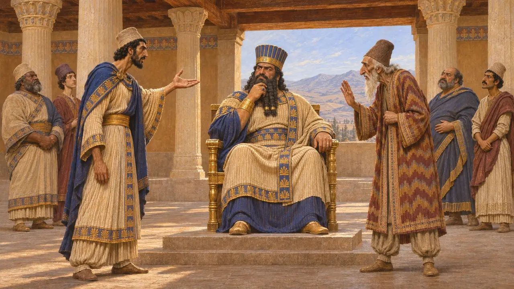
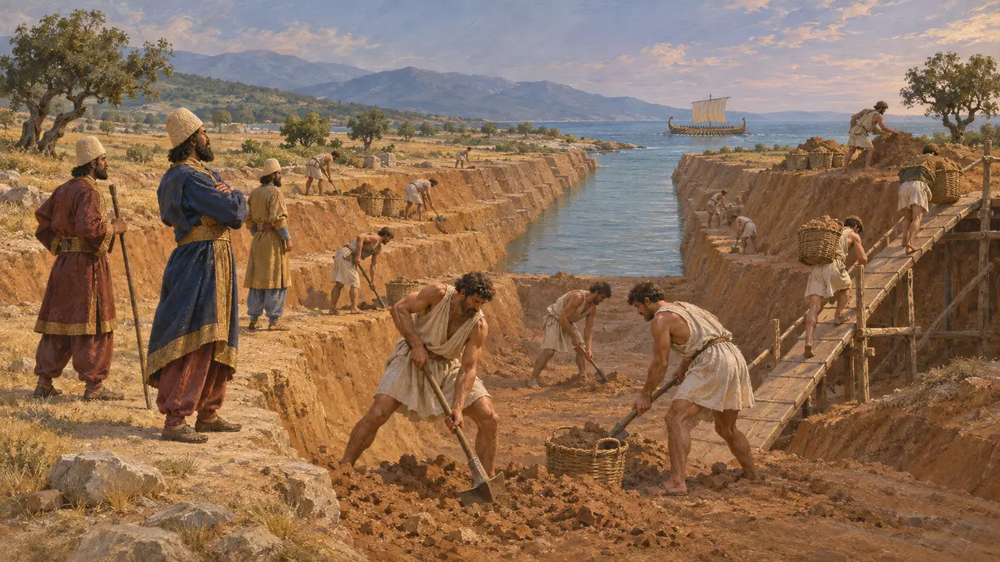
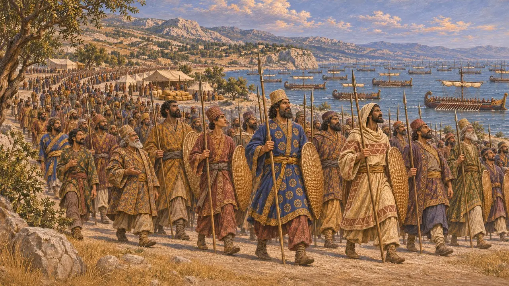
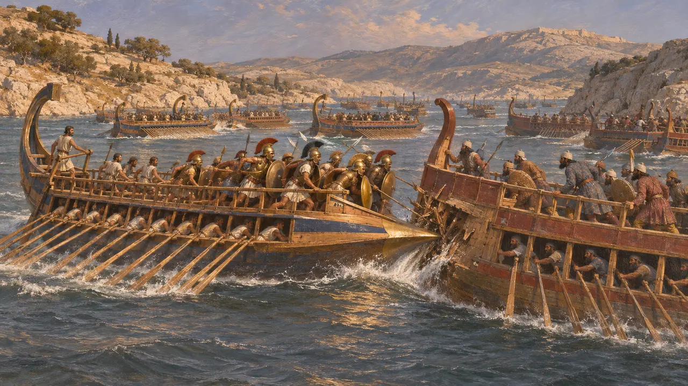
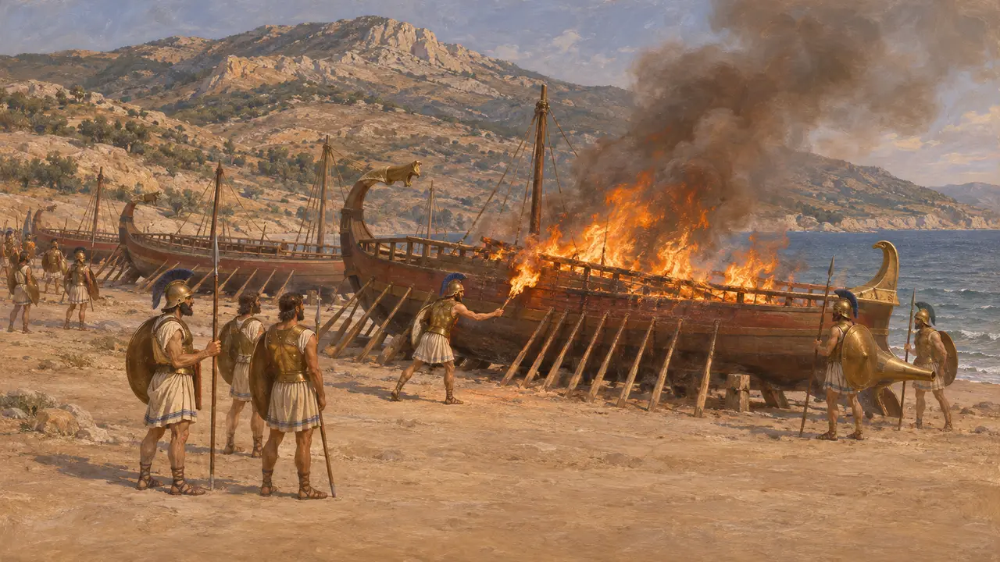

Ansiklopedi › Savaşlar ve olaylar

Kserkses'in Yunanistan seferi
Perslerin Yunanistan anakarasına karşı kara ve deniz seferi, MÖ 480-479
Oyunda: Bölüm 10: Sıcak Kapılar
480'de Kserkses, Yunan anakarasını Pers egemenliği altına almak için bir ordu ve donanmayla Hellespontos'u geçip Avrupa'ya girdi. Pers kuvvetleri Atina'yı iki kez aldı, ancak 480'de Salamis'te, 479'da Plataia ve Mykale'de alınan yenilgiler bu girişime son verdi. Savaş yüzyıllarca Yunan belleğini biçimlendirdi; Pers kraliyet yazıtları ise ondan hiç söz etmez.
Oyunda: Sefer; Athos, Thermopylai ve Plataia seviyelerini ve Mykale epilogunu kapsar. Kronik, Herodotos'un anlattığı gibi (7.147), Kserkses'in Abydos'ta Karadeniz tahıl gemilerinin Yunanistan'a doğru yoluna devam etmesine izin verişini hatırlatır.

Kral neden sefere çıktı
Antik anlatıHerodotos'a göre Dareios, Marathon'dan sonra yeni bir savaşa zaten hazırlanıyordu; derken Mısır isyan etti ve Dareios öldü. Kserkses, Mısır boyun eğdirildikten sonra savaşı devraldı. Herodotos kararı, Mardonios'un savaşı savunduğu, Artabanos'un ise karşı çıkarak uyardığı, rüyaların da Kserkses'i ileri ittiği bir meclis olarak sunar. Anlatısında Kral, Sardes'in yakılmasının ve Marathon yenilgisinin intikamını almaktan ve Pers hâkimiyetini Avrupa'ya yaymaktan söz eder.
Herodotus 7.1-19

Kanal, köprü ve depoyla hazırlık
Antik anlatıHerodotos, Athos yarımadasının boynundan geçen kanalın kazılmasının yaklaşık üç yıl sürdüğünü söyler. Kanal, donanmanın 492'de Mardonios'un gemilerinin parçalandığı burundan kaçınmasını sağladı. Yiyecek, Trak ve Makedonya kıyısı boyunca kurulan depolarda biriktirildi ve Hellespontos üzerine iki tekne köprüsü kuruldu. Herodotos'a göre fırtına ilk köprüleri yıkınca Kserkses suyun kamçılanmasını ve işin başındaki nezaretçilerin başlarının vurulmasını emretti.
Herodotus 7.22-25, 7.33-36

Kralın ordusu ne kadar büyüktü
TartışmalıHerodotos 1.700.000 piyade verir; donanma ve ordunun peşindekilerle birlikte toplam beş milyonun üzerine çıkar. 1.207 savaş gemisi sayar. Aiskhylos'un bin gemisi artı 207 hızlı gemi genellikle aynı toplam olarak okunur. Hiçbir modern tarihçi kara ordusu rakamlarını kabul etmez; yollar, su ve erzak bunu kaldıramazdı. Ordu için modern tahminler çoğunlukla 100.000'in altından yaklaşık 300.000'e kadar uzanır; birçok kişi donanmanın da daha küçük olduğunu düşünür.
Herodotus 7.60, 7.89, 7.186; Aeschylus, Persians

Thermopylai'den Salamis'e
Antik anlatı480'in Ağustos ya da Eylül ayında Persler Thermopylai geçidini zorladı; donanmalar ise Artemision açıklarında kesin sonuç alınamayan bir çarpışma yaptı. Ordu ardından Attika'ya yürüdü ve Atina Akropolisi'ni yaktı. Muhtemelen eylül sonunda Yunan donanması, Salamis Boğazı'nda Pers gemilerini yendi. Herodotos'a göre Kserkses bunun üzerine Asya'ya döndü ve savaşı bitirmesi için Mardonios'u seçme bir orduyla geride bıraktı.
Herodotus 7.201-8.120

Plataia, Mykale ve Perslerin sessizliği
Tartışmalı479'da Mardonios Atina'yı yeniden işgal etti, ardından Plataia yakınlarında savaşta düştü. Herodotos'un anlatımına göre aynı gün Yunanlılar Mykale'de Pers gemilerini yaktı. Hiçbir Pers metni bu savaşı kaydetmez. İmparatorluğun merkezi toprakları dokunulmadan kaldığı için, tarihçiler sarayın bunu ciddi bir yenilgi mi yoksa uzak bir sınırda bir aksilik mi saydığı konusunda anlaşamaz.
Herodotus 9.1-106; P. Briant, From Cyrus to Alexander, 2002
Kaynaklar
- Herodotus, Histories, books 7-9
- Aeschylus, Persians
- P. Briant, From Cyrus to Alexander, 2002
- J. F. Lazenby, The Defence of Greece 490-479 BC, 1993
- G. Cawkwell, The Greek Wars: The Failure of Persia, 2005
- A. Kuhrt, The Persian Empire: A Corpus of Sources from the Achaemenid Period, 2007